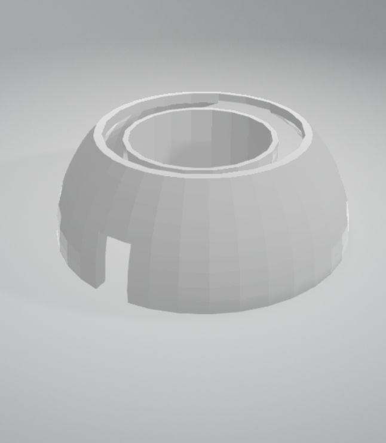

Onze prototypes
Schets
Gemaakt met Tinkercad
Ons huis heeft een koepelvorm. Hierdoor heeft het een unieke maar elegante vorm. Ook stroomt regenwater perfect van de zijkanten af. Dat water vangen we op om vervolgens het huishouden mee te draaien. Ook de bovenste zonnepanelen draaien rond zodat ze de meeste zon op kunnen vangen.
Prototype dak
3D geprint
Het dak van het huis bestaat uit een grote servo die de zonnepanelen kan laten draaien richting de zon.
Zo vangen we zo veel mogelijk zon op om stroom te krijgen.
.